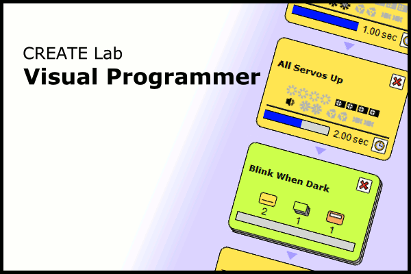

|
CREATE Lab Visual Programmer
version @version.number@
To download and run the Visual Programmer software, simply click the Launch button below. If you need
help, please see the
Visual Programmer Connection Guide.
 |